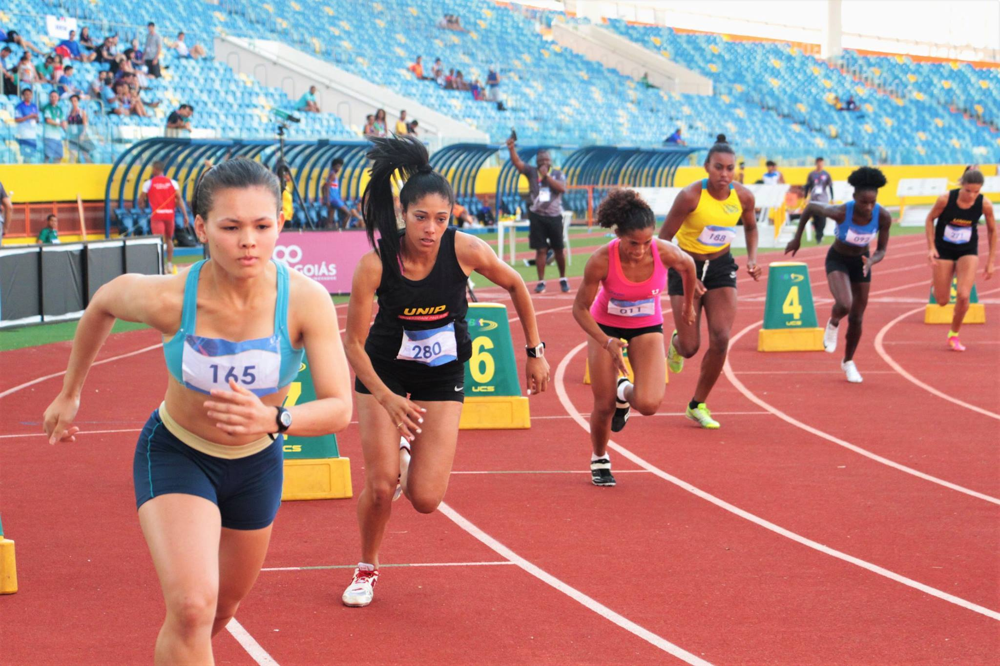

Futebol
O futebol é o esporte mais popular do mundo.originalmente futebol associado, e também referido como futebol de campoou futebol de onze - é um esporte de equipe jogado entre dois times de 11 jogadores cada um e um árbitro que se ocupa da correta aplicação das normas.

Atletismo
É um conjunto de esportes constituído por varias modalidades: corrida, marcha, lançamentos e saltos. De modo geral, o atletismo é praticado em estádios, com exceção de algumas corridas de longa distância, praticadas em vias públicas ou no campo, como a maratona.